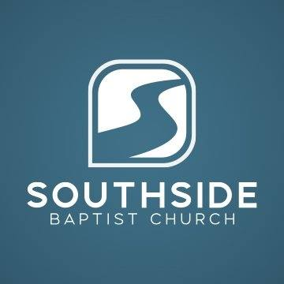

Monday Multiplied
Redefining Greatness

Scripture
Matthew 18:1–14
From Sunday
The disciples asked Jesus who was greatest in the kingdom, but Jesus redirected their desire for status. He called them toward childlike humility—not childishness—and the pastor urged us to depend on God, celebrate others, and measure life by Christlike humility and faithfulness rather than prominence or recognition. Excellence is not the problem; the danger is allowing success or being the best to become the idol that drives us.
Jesus also calls us to guard ourselves from sin and to value others the way He would. Sin must be taken seriously, confessed instead of excused, and resisted through faith in Jesus and the help of the Holy Spirit—not through our strength alone. Pride can lead us and those watching us away from God; humility notices people Jesus loves, invests in those who may offer little in return, and celebrates restoration. The pastor closed by inviting us to repent, believe in Jesus, pursue holiness, and examine whether we have overlooked someone He deeply loves.
Carry It Into the Week
- Depend on God, encourage rather than compare, and ask “Was I faithful?” instead of measuring your life by whether somebody noticed you.
- Take sin seriously: confess what you have been excusing, examine habits that nurture it, and depend on Jesus and the Holy Spirit for help.
- Do not overlook people Jesus deeply loves and values. Notice them, care about them, and invest with genuine compassion even when they have little to offer you in return.
Reflect
Am I more concerned with impressing people than with impressing God?
Pray
Jesus, forgive us for pride, comparison, and the sin we excuse. Teach us to depend on You, pursue holiness and faithfulness, and celebrate others instead of competing with them. Help us take sin seriously without trusting our own strength; thank You for giving us Your Spirit. Give us Your compassion for people we overlook, especially those who may have little to offer us. Help us trust You as Savior, value people as You do, and live for what impresses God rather than people. Amen.